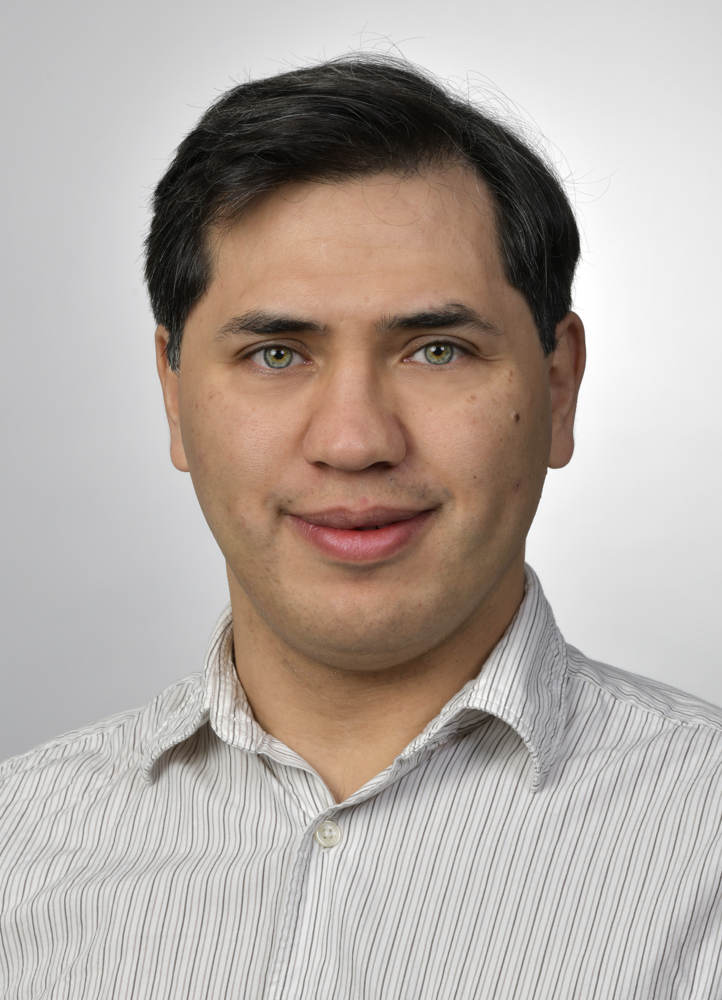

Rafael A. Lainez Reyes, Ph.D.
Applied Mathematician
Modeling, Simulation & Scientific Computing
I hold a Ph.D. in Mathematics from the University of California, Santa Barbara. I develop mathematical models and high-performance numerical algorithms for scientific computing, specializing in electronic structure methods and computational quantum mechanics.